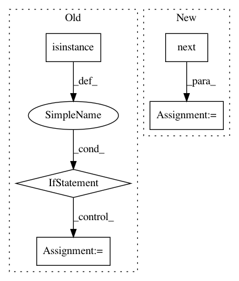

88352b0268efe49b54c9bdfad4846317752991ed,tools/lib_alignments/jobs_manual.py,MouseHandler,update_landmarks,#MouseHandler#,971
Before Change
"face": self.media["bounding_box"]})
landmarks = queue_manager.get_queue("out").get()
if isinstance(landmarks, dict) and landmarks.get("exception"):
cv2.destroyAllWindows() // pylint: disable=no-member
pid = landmarks["exception"][0]
t_back = landmarks["exception"][1].getvalue()
err = "Error in child process {}. {}".format(pid, t_back)
raise Exception(err)
if landmarks == "EOF":
exit(0)
alignment = self.extracted_to_alignment((landmarks["detected_faces"][0],
After Change
self.queues["in"].put({"image": self.media["image"],
"filename": self.media["frame_id"],
"manual_face": self.media["bounding_box"]})
detected_face = next(self.extractor.detected_faces())["detected_faces"][0]
alignment = detected_face.to_alignment()
frame = self.media["frame_id"]
In pattern: SUPERPATTERN
Frequency: 3
Non-data size: 5
Instances
Project Name: deepfakes/faceswap
Commit Name: 88352b0268efe49b54c9bdfad4846317752991ed
Time: 2019-09-15
Author: 36920800+torzdf@users.noreply.github.com
File Name: tools/lib_alignments/jobs_manual.py
Class Name: MouseHandler
Method Name: update_landmarks
Project Name: RaRe-Technologies/gensim
Commit Name: 4ea27ba44e2ce56f06c2294d02e59031707e1ca5
Time: 2014-04-19
Author: radimrehurek@seznam.cz
File Name: gensim/matutils.py
Class Name: MmReader
Method Name: __init__
Project Name: pyannote/pyannote-audio
Commit Name: 06278c94dd2e9d572840ee2133f0d9b366effaf8
Time: 2017-10-15
Author: bredin@limsi.fr
File Name: pyannote/audio/applications/feature_extraction.py
Class Name:
Method Name: extract